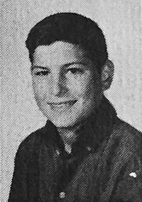

Биография
Родился года в семье незарегистрированных в браке студентов: уроженца Сирии Абдула Фаттаха (Джона) Джандали и Джоан Шибле из католической семьи немецких эмигрантов. Джоан училась в магистратуре Висконсинского университета, а Джандали там же работал ассистентом преподавателя. Поскольку родственники Джоан возражали против их отношений, а находившийся при смерти отец и вовсе пригрозил лишить её наследства, ей пришлось уехать рожать к частному врачу в Сан-Франциско и затем отдать ребёнка на усыновление. Мальчик был усыновлён Полом Джобсом и американкой армянского происхождения Кларой Джобс, урождённой Агопян (Clara Hagopian)[9]. Своих детей Джобсы иметь не могли[10]. Они и назвали приёмного сына Стивеном Полом. Джоан хотела, чтобы приёмные родители Стивена имели высшее образование, и, узнав, что Клара не окончила колледж, а Пол учился только в средней школе, подписала бумаги об усыновлении только после того, как они дали письменное обязательство оплатить обучение Стивена в колледже. Джобс всегда считал Пола и Клару отцом и матерью, он очень раздражался, если кто-то называл их приёмными родителями: «Они — мои настоящие родители на 100 %». Согласно правилам официального усыновления, биологические родители ничего не знали о местонахождении сына, и Стив встретился с родной матерью и младшей сестрой только через . Когда Стивену исполнилось два года, Джобсы удочерили девочку Пэтти, а ещё через три года семья переехала из Сан-Франциско в Маунтин-Вью. Пол был автомехаником и работал в финансовой компании CIT[англ.]. В семейном гараже он ремонтировал старые машины на продажу, чтобы заработать на образование Стива и выполнить обязательства перед его биологическими родителями. Пол также старался привить сыну любовь к профессии автомеханика. Это занятие не пришлось Стиву по душе, но через автомобили отец познакомил его с азами электроники. Вместе они разбирали и собирали радиоприёмники и телевизоры, в результате Стив заинтересовался и увлёкся подобной техникой. Клара Джобс работала бухгалтером в Varian Associates[англ.] — одной из первых хай-тек-компаний, позже вошедших в состав Кремниевой долины. Она научила Стива читать, прежде чем он пошёл в школу.
Стив Джобс